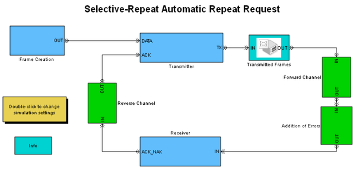

Selective-Repeat Automatic Repeat Request
Contents
Overview
This model simulates a selective-repeat automatic repeat request (ARQ) system. Packets are created, transmitted over a channel and affected by errors with a probability determined by the Forward Channel. This model allows you to visualize the system's behavior and analyze its performance under different conditions.
Structure of the Model
The model simulates the following processes:
- Generating frames
- Transmitting frames through the forward channel
- Introducing errors to frames
- Receiving frames and returning messages through the return channel
For each received frame, the receiver sends an acknowledgement (ACK) or nonacknowledgement (NAK) message back to the transmitter based on a cyclic redundancy code (CRC) check. The transmitter retransmits only the frames corresponding to NAK messages.
Frame Creation
This subsystem generates data frames with an exponential intergeneration time. Each frame has a unique sequence number that identifies it. (This demo uses the term “frame” in an abstract sense that is unrelated to frame-based signals in Simulink® software.)
Results and Displays
Scopes show the time and sequence number of four types of frames:
- Transmitted frames
- Frames accepted by the receiver
- Frames rejected by the receiver
- Frames in the reconstructed sequence
An additional scope displays the result of the CRC check for each received frame, where a value of 0 indicates an error.